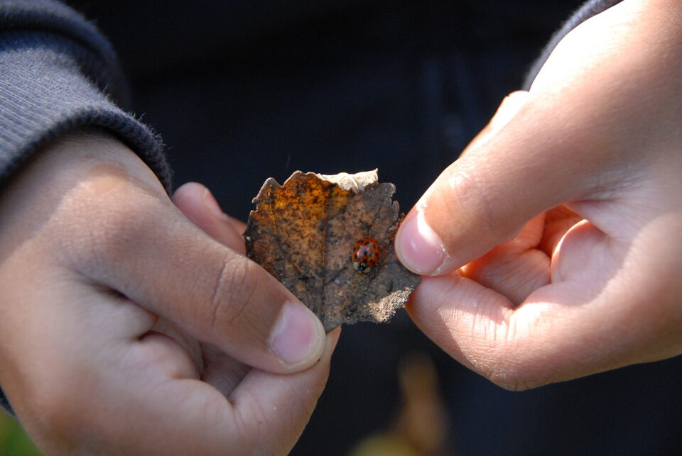

Our school. Our community. Our future.
Help keep
Kew Riverside
Primary School open.
As of 12 October 2026, closure was proposed for 1 September 2027, undecided. Supporters seek time to test costed recovery and alternatives. Check the council’s latest position.
Published response deadline: 16 October 2026. Check the council’s page.
Petition closes 13 January 2027. For people who live, work or study in Richmond borough; a Richmond Account is required. Signing does not replace your consultation response.
Online petition progress
193 online signatures · 19.3% of the campaign goal of 1,000.
807 more online signatures to reach the campaign goal.
First campaign milestone: 500 online signatures.
Council count snapshot checked . Online only; paper signatures are separate. Check the council petition for the current count and status

Campaign video
1 min 26 sec · Narrated by Ram
Published petition closing date: 13 January 2027. For people who live, work or study in Richmond borough; a Richmond Account is required. Check the petition page for its current status.
Transcript
Video by Yann Stoneman, a Kew Riverside parent and PTA member, in a personal capacity. It does not speak for all parents. Not made by the school, the PTA or Richmond Council. Narration: Ram.
Narration · video dated 14 October 2026
A school can be more than a building. Many families call Kew Riverside Primary School an extension of home. Older children help younger ones with their reading, and pupils get a warm welcome.
In July, Ofsted found a highly inclusive school, where pupils are happy, confident and responsible.
Now Richmond Council is proposing to close it, from September 2027. No final decision has been made.
A petition on the council’s website asked for a fair chance to rebuild pupil numbers before a final decision. It says closing the school would take away something Kew cannot easily rebuild.
It asked the council to withdraw the proposal, publish the full evidence behind it, and work with families on a plan to keep Kew Riverside open.
If you live, work or study in Richmond borough, please sign it. It’s open until 13th January 2027. Go to richmond.gov.uk forward slash e-petitions, and choose “Keep Kew Riverside Primary School open”. You’ll need a Richmond Account, which you can create from the petition page.
Already signed, or outside Richmond borough? Please share this film. Keep Kew Riverside open.
On-screen information
The animation shows a paper school, families, an Ofsted inspection card dated July 2026, the council’s closure proposal and a petition asking the council to keep Kew Riverside open. The proposal remains visible while the petition’s requests appear; the animation does not show a decision to withdraw it.
The final card says to choose “View or sign” beside “Keep Kew Riverside Primary School open” in the council’s petition list. It notes that a Richmond Account can be created from the petition page, and that the campaign homepage also links to the petition.